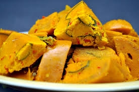

Okpa Recipe

Ingredients
- 2 cups Okpa flour
- 1 onion, blended
- 2 cups of water
- 1/4 cup palm oil
- Seasoning cubes
- Salt to taste
Method of Preparation
- In a bowl, mix the Okpa flour, blended onion, palm oil, salt, and seasoning cubes.
- Gradually add water to form a batter.
- Pour the mixture into banana leaves or small containers, and steam for about 30-45 minutes.
- Serve hot as a snack or side dish.